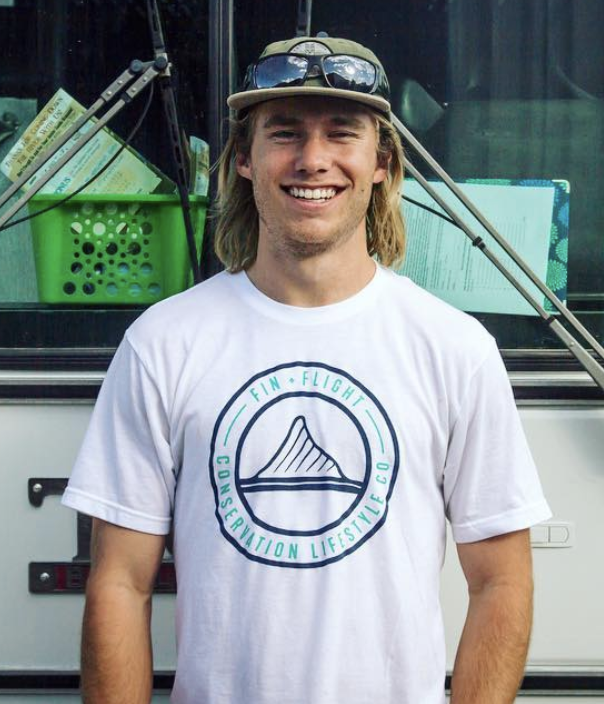

I’ve held many titles over my professional and academic careers.
Woodworker. Naturalist. Raft guide. Research assistant. Outdoor educator. Coach. Ski Technician. Product Expert. Captain.
I find great value in pushing my comfort levels and learning new skills, and I thrive in situations that require me to overcome challenges.
Ultimately I aim to build a career that utilizes the many things I’ve learned in my past professions and work in a field at the intersection of technology, education, environmental science and sustainability.

I was born and raised in Walnut Creek, CA. As a youth, when I wasn’t watching animal planet or burying my face in a book, I was usually out playing sports or tromping around the outdoors.
Nowadays, in my free time you may find me fishing, skiing, or biking out in the mountains, building out a camper van, or dreaming up the next big roadtrip. I find joy in simple moments surrounded by good music, wild landscapes, and my community of family and friends.